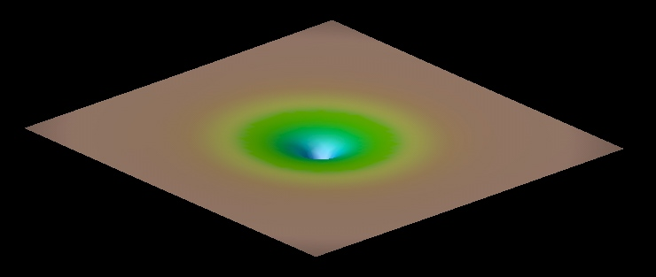
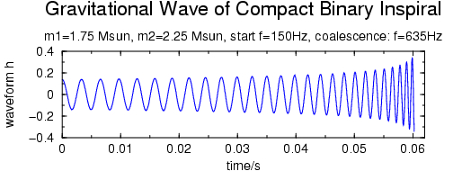
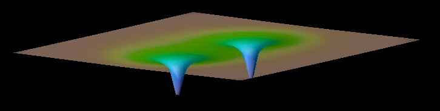

Wolfgang Tichy
Gravity, Black Holes and Gravitational Waves
About Spacetime and Gravity
Spacetime is the combination of the 3-dimensional space we live in plus
time. According to Albert Einstein's theory of General Relativity spacetime
can be visualized as a rubber sheet which gets deformed by any object which
has mass or energy. This deformation is called curvature of spacetime. All
the stars, planets, particles and things in the universe cause spacetime to
curve. The amount of curvature caused by any one object is proportional to
its mass and energy. Below is an example of the spacetime curvature
caused by a spherical object.

According to Einstein this curvature is the reason for
gravity. It predicts that all objects which are subject only to gravity move
on straight lines. But a straight line through curved spacetime may look
like a curve for us. Hence gravity is described not as a force, but rather
as curvature of spacetime. For example, if a heavy object like a star causes
sufficient spacetime curvature around itself, any smaller object moving on a
straight line through this curved spacetime, looks like moving on a
curved orbit for us. Hence gravity is an effect caused purely by the
curvature of spacetime.
Black Holes
If enough mass is concentrated in a small enough region of spacetime, the
spacetime curvature can become infinite. The pull of gravity in this case
becomes so strong that nothing, not even light, can escape this region.
Such objects are called black holes and the boundary which marks the region
out of which nothing can escape anymore is called an event horizon. Things
which move through the event horizon can never return!
Black holes can form for example when very massive stars collapse under the
influence of their own gravity. Black holes are indeed black since they only
swallow but never reflect light. They however influence their surroundings
by the curvature they produce. So smaller objects can orbit around black holes
just like the planets around the sun, except that the orbits are more
complicated. The orbits are in general not closed and if the black hole
rotates it can even drag other objects with it. Three examples
of Orbits around Black Holes
can be found here.
Gravitational Waves
If an object moves through spacetime (e.g. if one star or black hole orbits
around another star) the time-varying curvature of spacetime caused by this
object can create little ripples in spacetime, which then propagate through
spacetime, just like ripples on a pond or waves on a rubber sheet. These
ripples are called gravitational waves. Such gravitational waves can in
principle propagate through the whole universe and will shake all objects in
their path. The amplitude of these waves however is usually very small, so
that they are very hard to detect. The strongest waves are produced by some
of the most violent crashes in the universe, such as the merger of two black
holes. Several detectors are currently operating that can detect and measure
gravitational waves.
One of the most promising sources of gravitational
waves are binary systems of compact objects, such as two neutron stars or
two black holes orbiting around each other. Such binaries loose energy due
to the emission of gravitational waves and thus the orbital radius shrinks.
Hence the two objects spiral toward each other emitting gravitational waves
of increasing frequency and amplitude. Below is a graph of how part of the
waveform for the inspiral of two compact objects might look like:

The waveform shown here is in principle in the frequency region audible to
human beings. In the example here the amplitude has been artificially
increased so that it is loud enough for you to hear, click on the graph to
listen to the waveform! This waveform was computed using the so called
Post-Newtonian theory which approximates General Relativity for the case of
slow moving particles. The reason why we use this approximation is that
computations with it are much easier than when we use full General Relativity.
Yet near the end of the graph the two objects may move quite fast so that
the Post-Newtonian approximation starts to break down. Notice that the
calculation of the waveform was stopped when the two objects started to
merge. The final plunge and merger of the two objects in principle emits the
strongest gravitational waves. Yet at this point the objects are moving so
fast that Post-Newtonian theory is no longer valid and we have to use General
Relativity in order to do our calculations. Unfortunately General Relativity
is so complicated that nobody has manged to do this analytically so far.
The only way out seems to put the equations of General Relativity on a
computer and to try to simulate them there. This however, can be
very difficult as well, due to numerical instabilities.
My Research
Currently my research is mainly focused on numerical relativity, i.e.
simulating General Relativity on a computer. One of the goals in this field
is to numerically solve the Einstein equations to simulate the merger of two
black holes or two neutron stars. For such simulations three ingredients are
crucial:
(i) We need to start the simulation with astrophysically realistic
initial data,
(ii) the equations used in the computer simulation have to be written in
such a form that they are numerically stable long enough to simulate the
entire black hole merger.
(iii) especially for neutron stars we have to include enough physics (e.g.
a realistic matter equation of state or magnetic fields) to produce results
that model real neutron star mergers.
I am interested in all of the of these aspects.
For example, I am working on constructing initial data for binary black
holes. Such binaries are believed to spiral toward each other on
quasi-circular orbits. I have constructed initial data for binary black
holes based on Post-Newtonian data, which are astrophysically realistic as
long as the black holes are well separated. Below are pictures of such
initial data for two black holes in a Post-Newtonian circular orbit.

Both pictures show the so called conformal factor as seen from different
angles. This conformal factor is closely related to the spacetime
curvature. The two spikes are the black holes. Since the curvature at each
black hole center is infinite each spike should in principle be infinitely
long. However due to limited resolution the spikes are cut off at some
finite value.

Together with Bernd Bruegmann and Pablo Laguna I have also investigated
how to find coordinate systems which corotate with the two
orbiting black holes. Such corotating coordinate systems have the advantage
that the rapid circling motion of the two black holes is transformed away so
that one has to simulate only the slower drift of the holes toward each
other. It is hoped that then the numerical simulations will be more accurate
and stable. In the formulation we are using coordinates are fixed by
choosing a lapse function and a shift vector. Our objective is to find a
lapse and shift, which yield approximately corotating coordinates on the
initial data slice. As a first step we have applied
this idea to puncture initial data, which are similar but much
simpler than the Post-Newtonian based initial data shown above.
In addition, I am investigating the properties of different formulations of
the Einstein equations in numerical applications. The aim is to find out
which of the formulations is numerically more stable.